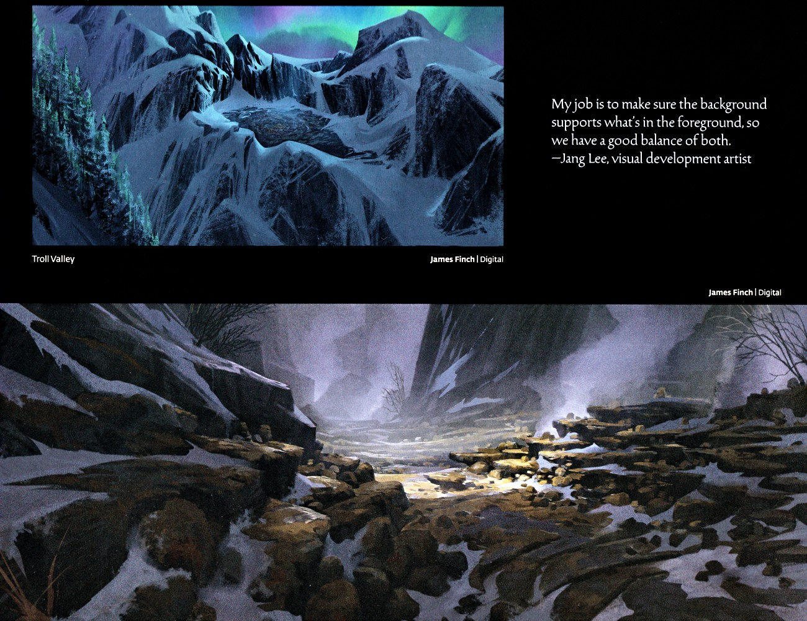
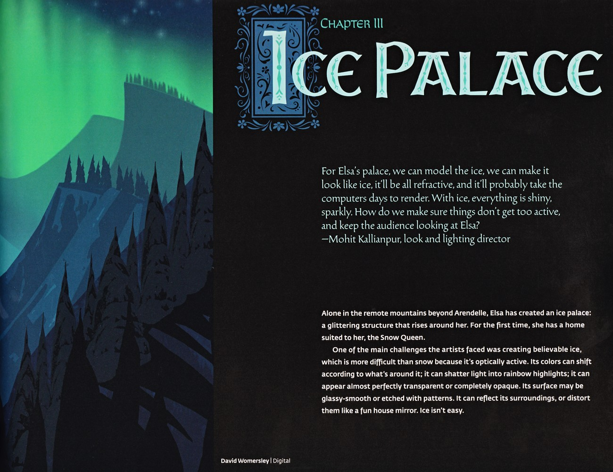
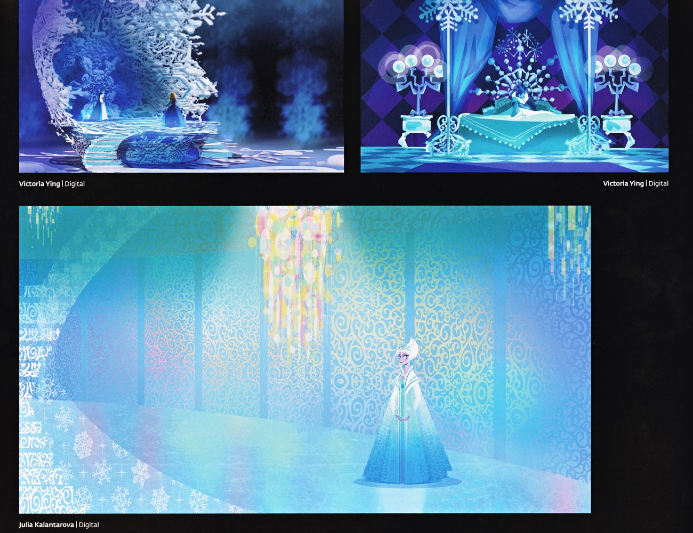
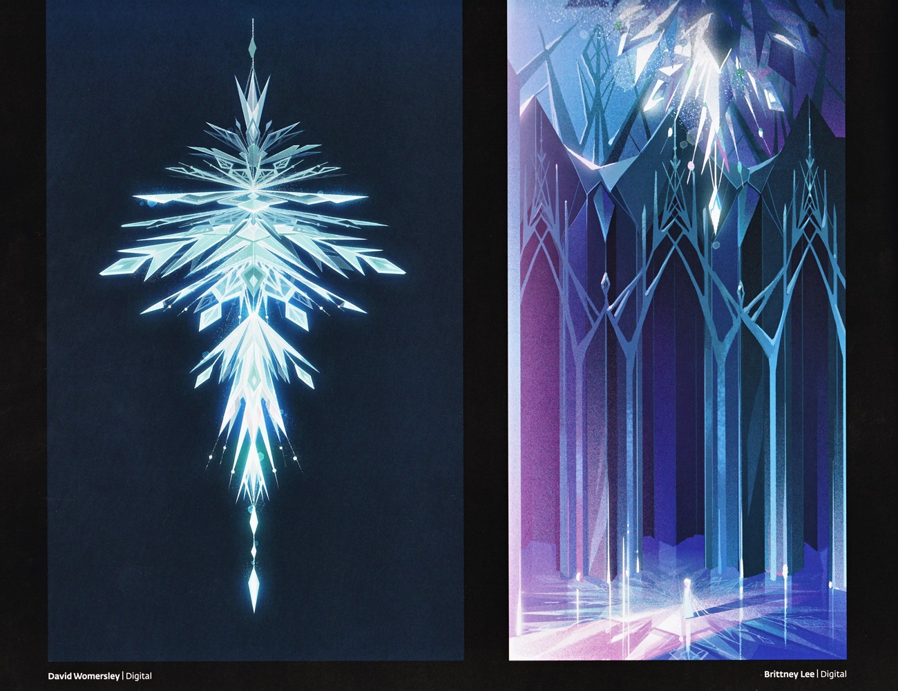

📖 设定集 · F1设定集
F1 图版 · 第三章 冰宫
F1 官方设定集图版 · p113–p127
5
本卷页数
🎨
设定集
中/英
双语
🖼️ F1 官方设定集 · 原书图版
F1 图版 · 第三章 冰宫
《The Art of Frozen》（Charles Solomon, Chronicle Books 2013） p113–p127
6
图版
p113–p127
原书页码
原书
扫描原图
笔记
逐页图注
❄️ 第三章「The Ice Palace（冰宫）」的剩余页：巨魔谷与雾溪过渡场景、以雪花六边结构为灵感的冰宫立面、王座厅与冰之材质研究。
🧊 第三章 The Ice Palace（p113–p127）

第三章「冰宫」前奏· 巨魔谷与雾溪概念图
本页展示两幅冰雪环境概念图：一幅为极光下、于常绿树林高处的雪覆山谷（标注“巨魔谷 / Troll Valley”），另一幅为雾气缭绕、穿行于暗色岩壁之间的雪溪。均由 James Finch 以数字绘制，为后续冰宫场景提供自然地貌与冷色调基调。（F1设定集原页）

第三章「冰宫」开篇· 章节标题与冰之写实研究
本章开启“冰宫”主题。引言说明艾莎在阿伦黛尔之外的群山间以冰建起一座随她升起的宫殿，首次拥有契合“冰雪女王”之名的居所。随后阐述冰比雪更难表现——它光学活跃，颜色随环境偏移、可碎光成虹、可透明亦可不透、表面或光滑或带纹、可反射亦可如哈哈镜般扭曲。为追求“材料真实”，团队向加州理工的“雪花博士”Ken Libbrecht（F1设定集原页）

第三章「冰宫」· 冰宫两种风格概念稿
本页并列两种冰宫风格方向：Scott Watanabe 绘的洋葱形高塔城堡（深蓝夜空下发光），与 David Womersley 绘的、依附冰崖的小型雪覆哥特式亭阁，体现早期造型语言的多种可能。（F1设定集原页）

第三章「冰宫」· 王座厅与雕花内饰概念
Victoria Ying 绘两图：其一为艾莎立于升起的冰台，周遭雾气与巨幅雪花雕岩；其二为华丽冰王座厅（中央覆布王座、多球冰烛台、菱形纹墙与深蓝厚帘）。Julia Kalantarova 绘艾莎居中于金蓝锦缎花纹大厅，缀以彩色玻璃挂饰与左侧繁复雪花母题，显示冰宫内部由“冷冰”向“华美织物感”混搭的方向。（F1设定集原页）

第三章「冰宫」· 水晶结构与哥特式长廊
David Womersley 绘纯黑背景下的纵向雪花状晶体（青白发光、对称羽状分枝）；Brittney Lee 绘冰宫内部长廊——哥特式拱与晶面柱体、左品红粉到右深蓝的流转光色、可反射冰地，与 p121 走廊稿形成母题呼应。（F1设定集原页）

第三章「冰宫」· 冰窟、森林与门厅概念
Claire Keane 绘加冕红裙的艾莎立于巨大漩涡雪花冰窟（青蓝调）；Lisa Keane 绘安娜（冬装）与汉斯等一行人聚于由树状冰形与蓝白浮粒点亮的神秘暗林；Julia Kalantarova 绘冰裙艾莎在深紫蓝微光室中伸手探向繁复雪花雕门，门后透出暖橙光，形成冷暖对照。三图覆盖冰宫内外多场景。（F1设定集原页）
💡 图注说明
本页全部图版为《The Art of Frozen》（Charles Solomon, Chronicle Books 2013）原书扫描（原图复制，未压缩），图注（中文标题 + 要点首句）逐页取自官方设定集中文笔记，点击图片可查看原尺寸扫描。
📌 本页要点
本页核心要点：①🧊 第三章 The Ice Palace（p113–p127）。来源：电影正典、官方设定集与官方小说综合梳理。